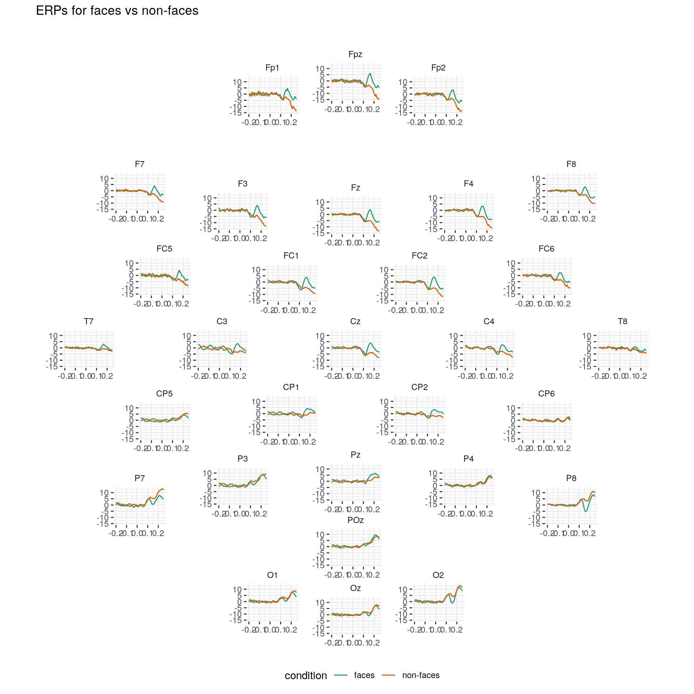
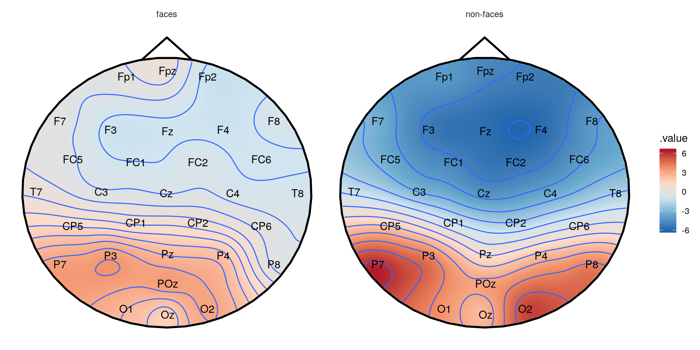
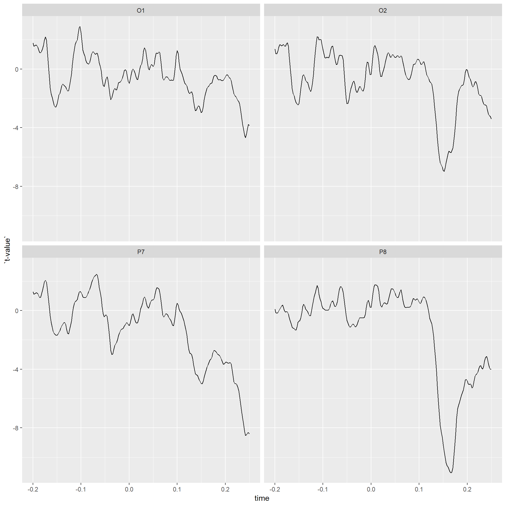

Introduction - Manipulating a clean EEG file exported from BrainVision 2.0
Bruno Nicenboim
2019-02-08
Source:vignettes/brainvision_files.Rmd
brainvision_files.Rmdeeguana provides a framework for manipulating EEG data with dplyr-based function (e.g., mutate, filter, summarize) extended to a new class eeg_lst. In addition, it provides other EEG-specialized functions, and ggplot wrapper functions. The new class is inspired by tidyverse principles but it’s not really “tidy” (due to space considerations), it’s a list of (i) a wide table (signal_tbl) that contains the signal amplitudes at every sample point of the EEG, (ii) an events table with information about markers (or triggers), blinks and other exported information, and (iii) a long table with experimental information, such as participant (recording), conditions, etc.
Here, I exemplify the use of eeguana with (pre-processed) EEG data from BrainVision 2.0. The data belong to a simple experiment where a participant was presented 100 faces and 100 assorted images in random order. The task of the experiment was to mentally count the number of faces.
First we download the data:
download.file("http://www.ling.uni-potsdam.de/~nicenboim/files/faces.vhdr",
mode="wb", destfile="faces.vhdr")
download.file("http://www.ling.uni-potsdam.de/~nicenboim/files/faces.vmrk",
mode="wb", destfile="faces.vmrk")
download.file("http://www.ling.uni-potsdam.de/~nicenboim/files/faces.dat",
mode="wb", destfile="faces.dat")BrainVision 2.0 exports three files: faces.vhdr, faces.vmrk, and faces.dat. The file faces.vhdr contains the metadata and links to the other two files, faces.vmrk contains the triggers and other events in the samples, and faces.dat contains the signals at every sample for every channel recorded.
library(eeguana)We first need to read the data:
faces <- read_vhdr("faces.vhdr")
#> # Data from faces.dat was read.
#> # Data from 1 segment(s) and 34 channels was loaded.
#> # Object size in memory 140.5 MbThe function read_vhdr() creates a list with data frames for the signal, events, segments information, and incorporates in its attributes generic EEG information.
faces
#> $signal
#> .id .sample_id Fp1 Fpz Fp2 F7 F3
#> 1: 1 1 -4.270188 -12.496757 -8.512611 5.8104863 0.7987084
#> 2: 1 2 -5.986778 -11.261559 -8.302858 4.4670320 -0.4558482
#> 3: 1 3 -6.580773 -9.333183 -7.679757 3.7081127 -1.8434987
#> 4: 1 4 -5.896090 -6.184696 -6.079263 3.9488502 -2.6274934
#> 5: 1 5 -5.349657 -2.581047 -3.960115 4.6228004 -2.9634132
#> ---
#> 525203: 1 525203 -19.180754 -14.482754 -11.880928 -3.0353870 -3.5060143
#> 525204: 1 525204 -14.669420 -10.800195 -7.822333 -0.2864416 -2.9062314
#> 525205: 1 525205 -10.086312 -7.376223 -4.007497 2.3745189 -2.2934551
#> 525206: 1 525206 -5.963717 -6.318047 -2.550068 4.0785899 -2.8591332
#> 525207: 1 525207 -2.811746 -9.569276 -5.257495 3.9431772 -4.7773180
#> Fz F4 F8 FC5 FC1 FC2
#> 1: -3.7944875 -7.004565 -9.5905457 -5.5008502 -1.040939 -5.750594
#> 2: -3.9204431 -7.312232 -10.1968956 -8.2559958 -1.625572 -6.205832
#> 3: -3.6854007 -7.325179 -10.5801353 -8.9441166 -2.496611 -6.225702
#> 4: -2.2696950 -6.544898 -10.5005941 -5.3551817 -3.275798 -5.792281
#> 5: -0.1724038 -5.449733 -10.2940083 -0.5347631 -3.816769 -5.539208
#> ---
#> 525203: -5.1268702 -3.885933 1.3387113 -6.0354300 -3.429955 -1.821500
#> 525204: -4.6610451 -3.474034 0.5267539 -5.6796050 -3.269526 -1.967095
#> 525205: -3.9615459 -2.554780 -0.1948199 -5.2791243 -2.709156 -1.333362
#> 525206: -4.5113835 -2.396278 -0.8776174 -5.5155010 -2.732390 -1.006990
#> 525207: -7.2133980 -4.015337 -1.6118808 -7.1379128 -3.719297 -1.199275
#> FC6 M1 T7 C3 Cz C4
#> 1: -9.455340 3.2116241 -2.5749669 -3.198639 -7.162738 -6.0244598
#> 2: -9.701509 1.5566816 -2.1688442 -3.223826 -7.327467 -4.7359419
#> 3: -9.615817 0.4754019 -1.5235398 -4.196370 -7.618096 -3.2705278
#> 4: -8.781445 -0.3485098 -0.1197605 -6.155464 -7.683692 -1.2953618
#> 5: -7.758235 -1.6416440 1.5852079 -8.072474 -7.589663 0.9121451
#> ---
#> 525203: -1.574225 -3.9028225 -9.0984344 -2.281207 -1.244156 -2.6202018
#> 525204: -2.711437 -1.4479842 -8.1386690 -1.984105 -1.888554 -3.1423230
#> 525205: -3.477794 0.6584158 -7.0688133 -1.378137 -2.078016 -2.8522072
#> 525206: -4.265026 2.0143995 -6.4578338 -1.488095 -2.738976 -3.3436871
#> 525207: -6.290535 3.4945364 -7.3460751 -2.911523 -4.274473 -5.8495107
#> T8 M2 CP5 CP1 CP2 CP6
#> 1: -4.771918 -3.2116241 -6.062939 -4.813977 -5.0018249 -8.6002913
#> 2: -3.939853 -1.5566816 -5.505422 -4.283286 -3.9824409 -6.4684544
#> 3: -3.285263 -0.4754019 -5.300730 -4.089828 -2.8778281 -4.4623995
#> 4: -2.399213 0.3485098 -5.378413 -4.206456 -1.4029371 -2.4144411
#> 5: -1.056782 1.6416440 -5.488734 -4.434868 0.3268354 -0.1063155
#> ---
#> 525203: -3.093663 3.9028225 -8.155416 -3.549603 -3.7856157 -1.9837997
#> 525204: -2.935883 1.4479842 -6.898589 -3.393985 -4.0930557 -3.5452051
#> 525205: -3.875237 -0.6584158 -5.362293 -2.832092 -3.8660426 -4.0679202
#> 525206: -4.052106 -2.0143995 -4.340692 -2.890889 -4.3359194 -4.9113569
#> 525207: -4.504183 -3.4945364 -4.906254 -4.134459 -6.3578181 -7.4022784
#> P7 P3 Pz P4 P8 POz
#> 1: -6.72501945 -7.823194 -9.713374 -10.933434 -4.1939182 -13.021215
#> 2: -4.19162369 -6.248482 -8.652735 -8.811299 -2.4914169 -10.943350
#> 3: -1.97165060 -4.997821 -7.685406 -6.668526 -1.0310369 -8.963390
#> 4: -0.09873655 -3.947244 -6.593503 -4.320339 0.6503686 -6.857091
#> 5: 1.68736827 -2.843956 -5.372189 -1.687156 2.8481901 -4.618455
#> ---
#> 525203: -17.43293571 -7.778884 -3.405085 -1.660518 -4.3979721 -7.370723
#> 525204: -14.93541336 -6.817270 -4.063128 -2.827326 -5.3324118 -7.889754
#> 525205: -12.36065578 -5.574656 -4.185033 -3.481713 -6.1155925 -7.927995
#> 525206: -10.60478783 -5.109689 -4.693735 -4.598518 -7.1271410 -8.352034
#> 525207: -11.30642700 -6.548401 -6.205623 -6.893994 -9.2952871 -9.975165
#> O1 Oz O2 EOGV EOGH
#> 1: -7.650791 -8.6958437 -8.901768 36.3205566 20.61859
#> 2: -3.840688 -5.8336391 -6.211349 39.7541809 25.55089
#> 3: -0.550869 -3.2353799 -3.810405 42.1534882 29.02995
#> 4: 2.178792 -0.7047617 -1.321697 44.8317413 30.14127
#> 5: 4.996092 2.2072635 1.650699 49.1988983 29.85255
#> ---
#> 525203: -17.387997 -13.6087084 -10.443031 0.8650103 -12.82597
#> 525204: -15.422725 -14.4835081 -12.536522 -0.9290609 -14.95488
#> 525205: -13.746743 -15.2129507 -14.059873 -1.9016356 -14.81808
#> 525206: -13.172369 -16.1580162 -15.562737 -3.9798355 -12.73059
#> 525207: -14.335607 -17.8692055 -17.643250 -9.1380615 -12.55048
#>
#> $events
#> .id type description .sample_0 .size .channel
#> 1: 1 New Segment 1 1 <NA>
#> 2: 1 Bad Interval Bad Min-Max 2158 738 Fp1
#> 3: 1 Bad Interval Bad Min-Max 2161 731 Fp2
#> 4: 1 Bad Interval Bad Min-Max 2162 729 Fpz
#> 5: 1 Bad Interval Bad Min-Max 2173 689 F8
#> ---
#> 4272: 1 Bad Interval Bad Min-Max 524692 204 P8
#> 4273: 1 Bad Interval Bad Min-Max 524725 268 FC5
#> 4274: 1 Bad Interval Bad Min-Max 524777 346 P7
#> 4275: 1 Bad Interval Bad Min-Max 524983 173 Cz
#> 4276: 1 Bad Interval Bad Min-Max 525073 135 O2
#>
#> $segments
#> # A tibble: 1 x 3
#> .id recording segment
#> <int> <chr> <int>
#> 1 1 faces.vhdr 1
#>
#> attr(,"class")
#> [1] "eeg_lst"
#> attr(,"vars")
#> character(0)It provides a summary:
summary(faces)
#> # EEG data (eeg_lst) from the following channels:
#> channel type .reference resolution unit radius theta phi .x .y .z
#> 1: Fp1 Ch1 avim12 NA µV 1 -90 -72 -0.31 0.95 0.00
#> 2: Fpz Ch2 avim12 NA µV 1 90 90 0.00 1.00 0.00
#> 3: Fp2 Ch3 avim12 NA µV 1 90 72 0.31 0.95 0.00
#> 4: F7 Ch4 avim12 NA µV 1 -90 -36 -0.81 0.59 0.00
#> 5: F3 Ch5 avim12 NA µV 1 -60 -51 -0.55 0.67 0.50
#> 6: Fz Ch6 avim12 NA µV 1 45 90 0.00 0.71 0.71
#> 7: F4 Ch7 avim12 NA µV 1 60 51 0.55 0.67 0.50
#> 8: F8 Ch8 avim12 NA µV 1 90 36 0.81 0.59 0.00
#> 9: FC5 Ch9 avim12 NA µV 1 -69 -21 -0.87 0.33 0.36
#> 10: FC1 Ch10 avim12 NA µV 1 -31 -46 -0.36 0.37 0.86
#> 11: FC2 Ch11 avim12 NA µV 1 31 46 0.36 0.37 0.86
#> 12: FC6 Ch12 avim12 NA µV 1 69 21 0.87 0.33 0.36
#> 13: M1 Ch13 avim12 NA µV 0 0 0 NA NA NA
#> 14: T7 Ch14 avim12 NA µV 1 -90 0 -1.00 0.00 0.00
#> 15: C3 Ch15 avim12 NA µV 1 -45 0 -0.71 0.00 0.71
#> 16: Cz Ch16 avim12 NA µV 1 0 0 0.00 0.00 1.00
#> 17: C4 Ch17 avim12 NA µV 1 45 0 0.71 0.00 0.71
#> 18: T8 Ch18 avim12 NA µV 1 90 0 1.00 0.00 0.00
#> 19: M2 Ch19 avim12 NA µV 0 0 0 NA NA NA
#> 20: CP5 Ch20 avim12 NA µV 1 -69 21 -0.87 -0.33 0.36
#> 21: CP1 Ch21 avim12 NA µV 1 -31 46 -0.36 -0.37 0.86
#> 22: CP2 Ch22 avim12 NA µV 1 31 -46 0.36 -0.37 0.86
#> 23: CP6 Ch23 avim12 NA µV 1 69 -21 0.87 -0.33 0.36
#> 24: P7 Ch24 avim12 NA µV 1 -90 36 -0.81 -0.59 0.00
#> 25: P3 Ch25 avim12 NA µV 1 -60 51 -0.55 -0.67 0.50
#> 26: Pz Ch26 avim12 NA µV 1 45 -90 0.00 -0.71 0.71
#> 27: P4 Ch27 avim12 NA µV 1 60 -51 0.55 -0.67 0.50
#> 28: P8 Ch28 avim12 NA µV 1 90 -36 0.81 -0.59 0.00
#> 29: POz Ch29 avim12 NA µV 1 67 -90 0.00 -0.92 0.39
#> 30: O1 Ch30 avim12 NA µV 1 -90 72 -0.31 -0.95 0.00
#> 31: Oz Ch31 avim12 NA µV 1 90 -90 0.00 -1.00 0.00
#> 32: O2 Ch32 avim12 NA µV 1 90 -72 0.31 -0.95 0.00
#> 33: EOGV Ch33 NA µV 0 0 0 NA NA NA
#> 34: EOGH Ch34 NA µV 0 0 0 NA NA NA
#> channel type .reference resolution unit radius theta phi .x .y .z
#> # Sampling rate: 500 Hz.
#> # Size in memory: 140.5 Mb.
#> # Total duration: 00:17:30.
#> # Summary of segments
#> recording segment_n
#> 1: faces.vhdr 1
#> # Summary of events
#> type description n
#> 1: Bad Interval Bad Min-Max 3734
#> 2: Bad Interval Multiple 105
#> 3: New Segment 1
#> 4: Stimulus s101 1
#> 5: Stimulus s102 1
#> 6: Stimulus s111 1
#> 7: Stimulus s121 1
#> 8: Stimulus s122 1
#> 9: Stimulus s130 200
#> 10: Stimulus s5 1
#> 11: Stimulus s70 100
#> 12: Stimulus s71 100
#> 13: UserDefined Blink 30Furthermore, it allows for quick visualization.
plot(faces)
#> # Downsampling from 500Hz to 62.5Hz.
#> # Object size in memory 17.8 Mb
The standard plots can be slightly customized using ggplot layers.
plot(faces) + coord_cartesian(ylim = c(-500,500))
#> # Downsampling from 500Hz to 62.5Hz.
#> # Object size in memory 17.8 Mb
Some intervals were marked as “bad” by BrainVision, and so we’ll remove them from the data. We’ll also segment and baseline the data. In this experiment, the trigger “s70” was used for faces and “s71” for no faces. We’ll segment the data using these two triggers.
faces_segs <- faces %>%
segment(description %in% c("s70", "s71"),
lim = c(-.2,.25)) %>%
event_to_ch_NA(type == "Bad Interval") %>%
ch_baseline()
#> # Total of 200 segments found.
#> # Object size in memory 12.2 Mb after segmentation.We can also edit the segmentation information and add more descriptive labels. eeguana has wrappers for many dplyr commands for the EEG data (see ?`dplyr-eeguana`). These commands always return an entire eeg_lst object so that they can be piped using magrittr’s pipe, %>%.
faces_segs_some <- faces_segs %>%
mutate(condition =
if_else(description == "s70", "faces", "non-faces")) %>%
select(-type)
faces_segs_some
#> $signal
#> .id .sample_id Fp1 Fpz Fp2 F7 F3 Fz
#> 1: 1 -99 3.000602 3.822540 1.676837 5.345215 8.526904 4.730365
#> 2: 1 -98 4.651500 5.966759 2.899244 6.229248 11.957867 6.160355
#> 3: 1 -97 5.636973 7.734169 3.360790 6.146507 12.643122 7.125668
#> 4: 1 -96 4.887103 7.093736 1.560090 4.679008 10.153717 6.335395
#> 5: 1 -95 1.679875 3.586631 -2.115480 1.817395 6.471601 4.633891
#> ---
#> 45196: 200 122 NA NA NA -6.226833 -6.164627 -8.134506
#> 45197: 200 123 NA NA NA -7.609634 -6.624886 -8.577490
#> 45198: 200 124 NA NA NA -8.355278 -7.320350 -8.860150
#> 45199: 200 125 NA NA NA -8.419843 -8.317026 -9.056007
#> 45200: 200 126 NA NA NA -8.219583 -9.290400 -9.426888
#> F4 F8 FC5 FC1 FC2 FC6 M1
#> 1: 3.188497 -0.1089175 -3.644006 7.912477 3.989274 1.272626 0.2677516
#> 2: 3.994015 -0.8760965 1.023301 9.416551 4.667467 3.301379 -0.2832003
#> 3: 4.267825 -2.2046354 7.279726 9.103708 5.293130 3.712586 -0.7368386
#> 4: 3.259394 -3.9267309 10.369022 7.112526 4.947480 1.836436 -0.8240938
#> 5: 1.394350 -5.1243312 10.296667 4.968021 4.046026 -1.199115 -0.6874469
#> ---
#> 45196: -6.909568 -0.8537389 -9.798989 -7.777216 -9.401660 -6.067313 -6.4766435
#> 45197: -7.793821 -0.9486715 -10.705381 -8.119785 -9.315678 -7.353704 -6.6995262
#> 45198: -8.050289 -0.5816752 -11.125468 -8.373542 -9.178003 -8.296130 -6.9813064
#> 45199: -7.632708 0.1328152 -10.956071 -8.740564 -9.007817 -8.350711 -7.0623969
#> 45200: -7.286663 0.5260323 -10.897510 -9.636951 -8.939460 -7.994563 -7.0156692
#> T7 C3 Cz C4 T8 M2
#> 1: -3.057617 10.609308 5.917813 0.8313377 -10.315272 -0.2677516
#> 2: -1.562383 12.928541 6.262912 1.0666051 -10.356676 0.2832003
#> 3: 1.504318 11.542353 5.948693 1.9167381 -11.298820 0.7368386
#> 4: 5.022166 7.915255 4.986212 2.8912187 -11.997029 0.8240938
#> 5: 6.427537 4.484360 4.172830 3.3982225 -12.559875 0.6874469
#> ---
#> 45196: -8.022766 -6.429070 -10.872999 -8.3944751 -3.502227 6.4766435
#> 45197: -8.829075 -7.358996 -10.609312 -9.2848460 -4.407707 6.6995262
#> 45198: -9.287003 -8.015747 -10.252135 -9.7955848 -4.839347 6.9813064
#> 45199: -9.304779 -8.464732 -9.964297 -9.9221298 -4.811365 7.0623969
#> 45200: -9.483838 -9.494273 -10.028708 -10.5967504 -4.864176 7.0156692
#> CP5 CP1 CP2 CP6 P7 P3 Pz
#> 1: 1.964691 6.7162759 3.262704 -7.399092 -5.496809 2.0440808 4.166571
#> 2: 4.404590 7.4449489 3.293858 -5.744716 -2.861829 3.2697255 4.204710
#> 3: 5.582302 7.1147640 3.475278 -3.493423 1.280905 4.4449736 4.435450
#> 4: 5.430152 6.1576960 3.890801 -1.759528 5.945641 5.2879867 4.639458
#> 5: 4.314408 5.2338812 4.307086 -1.050894 8.049101 5.4885453 4.919482
#> ---
#> 45196: -1.349851 -0.4762376 -5.722418 -3.533263 2.242977 0.7155832 -4.610498
#> 45197: -3.101862 -1.1596463 -6.534246 -4.621159 -0.126445 -0.6689793 -5.037940
#> 45198: -4.486185 -1.7303489 -6.932361 -5.494592 -2.238547 -1.8152691 -5.363847
#> 45199: -5.391058 -2.1837558 -7.031692 -6.007089 -3.761132 -2.4688984 -5.509579
#> 45200: -6.672053 -3.0703575 -7.622055 -6.492426 -5.677335 -3.4514109 -5.946858
#> P4 P8 POz O1 Oz O2
#> 1: -0.0616881 -8.3880332 -0.3286116 -6.0260374 -5.461096 -4.2778666
#> 2: 0.5590584 -6.7958000 0.3093608 -2.6993167 -2.760820 -2.2311228
#> 3: 1.7226454 -4.7219687 1.9620757 1.8627557 1.137758 0.7749981
#> 4: 2.7629569 -3.0705338 3.7967925 5.8118551 4.439274 3.4188545
#> 5: 3.4599713 -1.9033555 5.3241937 8.0964449 6.621065 5.8291734
#> ---
#> 45196: -3.9528958 1.4214111 -4.3255999 -0.5402464 -4.114951 -0.3463787
#> 45197: -4.7200541 0.7046986 -4.7982240 -0.8443795 -3.887248 -0.4495586
#> 45198: -5.5482372 -0.2055778 -5.3792999 -2.0916432 -4.558462 -1.1659049
#> 45199: -6.1985716 -1.2616262 -5.9168708 -4.1249534 -6.119560 -2.5120736
#> 45200: -6.8952164 -1.9542868 -6.5737116 -6.4350015 -7.568655 -3.5681661
#> EOGV EOGH
#> 1: 6.783448 2.078419
#> 2: 6.625389 4.423636
#> 3: 7.371072 6.663611
#> 4: 9.326947 8.364970
#> 5: 11.692706 9.205865
#> ---
#> 45196: -8.905102 18.196424
#> 45197: -9.181591 17.637968
#> 45198: -8.742321 17.773702
#> 45199: -9.108685 17.002721
#> 45200: -10.735058 15.214422
#>
#> $events
#> .id type description .sample_0 .size .channel
#> 1: 1 Stimulus s70 1 1 <NA>
#> 2: 2 Stimulus s71 1 1 <NA>
#> 3: 3 Stimulus s71 1 1 <NA>
#> 4: 4 Stimulus s71 1 1 <NA>
#> 5: 5 Stimulus s70 1 1 <NA>
#> ---
#> 196: 196 Stimulus s71 1 1 <NA>
#> 197: 197 Stimulus s70 1 1 <NA>
#> 198: 198 Stimulus s70 1 1 <NA>
#> 199: 199 Stimulus s70 1 1 <NA>
#> 200: 200 Stimulus s70 1 1 <NA>
#>
#> $segments
#> # A tibble: 200 x 5
#> .id recording segment description condition
#> <int> <chr> <int> <chr> <chr>
#> 1 1 faces.vhdr 1 s70 faces
#> 2 2 faces.vhdr 2 s71 non-faces
#> 3 3 faces.vhdr 3 s71 non-faces
#> 4 4 faces.vhdr 4 s71 non-faces
#> 5 5 faces.vhdr 5 s70 faces
#> 6 6 faces.vhdr 6 s71 non-faces
#> 7 7 faces.vhdr 7 s71 non-faces
#> 8 8 faces.vhdr 8 s70 faces
#> 9 9 faces.vhdr 9 s70 faces
#> 10 10 faces.vhdr 10 s70 faces
#> # … with 190 more rows
#>
#> attr(,"class")
#> [1] "eeg_lst"
#> attr(,"vars")
#> character(0)With some ggplot skills, we can create customized plots. plot_gg downsamples the signals (by default), and converts them to a long-format data frame that is feed into ggplot object. This object can then be customized.
faces_segs_some %>%
select(O1, O2, P7, P8) %>%
plot_gg() +
geom_line(alpha = .1, aes(group = .id, color = condition)) +
stat_summary(fun.y = "mean", geom ="line", alpha = 1, size = 1.5,
aes(color = condition)) +
facet_wrap(~ channel) +
geom_vline(xintercept = 0, linetype = "dashed") +
geom_vline(xintercept = .17, linetype = "dotted") +
theme(legend.position = "bottom") 
The motivation for manipulating the data in the eeg_lst format and not transforming them directly to a data frame has to do with size considerations. In this case, the original file was 149 MB, converting it to a long format entails a lot of repetition and generates an object of 786 MB. While this will still work here, a long format quickly becomes prohibitive in real settings with longer recordings and with several subjects.
We can see here the N170 component in the faces condition for the average trial on a single participant. We can investigate the signal by averaging the channels of the occipital and parietal lobes using the capabilities inherited from dplyr, and the special function, chs_mean(), a wrapper for rowMeans(), which takes as arguments the relevant channels and whether missing values should be omitted from the calculations.
faces_segs_some %>%
transmute(Occipital = chs_mean(O1, O2, Oz, na.rm = TRUE),
Parietal = chs_mean(P3, P4, P7, P8, Pz, na.rm = TRUE)) %>%
plot_gg() +
geom_line(alpha = .1, aes(group = .id, color = condition)) +
stat_summary(fun.y = "mean", geom ="line", alpha = 1, size = 1,
aes(color = condition)) +
facet_wrap(~ channel) +
theme(legend.position = "bottom") 
We can also calculate the ERPs and then plot them in their layout:
ERP_faces <- faces_segs_some %>% group_by(.sample_id, condition) %>%
summarize_all_ch(mean,na.rm=TRUE)
ERP_plot <- ERP_faces %>%
plot_gg() +
geom_line(aes(color = condition)) +
facet_wrap(~ channel) +
theme(legend.position = "bottom") +
ggtitle("ERPs for faces vs non-faces")
ERP_plot %>% plot_in_layout() 
Another possibility is to create a topographic plot of the two conditions, by first making segments that include only the interval .1-.2 s after the onset of the stimuli, creating a table with interpolated amplitudes and using the ggplot wrapper plot_topo().
faces_segs_some %>% filter(between(as_time(.sample_id, unit = "milliseconds"),100,200)) %>%
group_by(condition) %>%
summarize_all_ch(mean, na.rm = TRUE) %>%
plot_topo() +
annotate_head() +
geom_contour() +
geom_text(colour = "black") +
facet_grid(~condition)
For more specialized plots or analyses, it might be necessary to extract the data in long data frame format first. For example, here, we visualize independent t-tests (or some other statistics) at every electrode and time point.
df <- faces_segs_some %>%
select(O1, O2, P7, P8) %>%
as_tibble %>%
# We can use regular dplyr functions now
group_by(channel, time) %>%
summarize(
`t-value` = t.test(amplitude[condition == "faces"],
amplitude[condition == "non-faces"])$statistic)
df
#> # A tibble: 904 x 3
#> # Groups: channel [?]
#> channel time `t-value`
#> <chr> <dbl> <dbl>
#> 1 O1 -0.2 1.77
#> 2 O1 -0.198 1.56
#> 3 O1 -0.196 1.59
#> 4 O1 -0.194 1.65
#> 5 O1 -0.192 1.62
#> 6 O1 -0.19 1.49
#> 7 O1 -0.188 1.28
#> 8 O1 -0.186 1.12
#> 9 O1 -0.184 1.10
#> 10 O1 -0.182 1.20
#> # … with 894 more rowsThen we just load the data frame into ggplot.
ggplot(df, aes(x = time, y = `t-value`)) + geom_line() +
facet_wrap(~ channel) 
However, this can be also done in the without transforming the eeg_lst object:
faces_segs_some_t <-
faces_segs_some %>%
select(O1, O2, P7, P8) %>%
group_by(.sample_id) %>%
summarize_all_ch(funs(t = t.test(.[condition == "faces"],
.[condition == "non-faces"])$statistic))
plot_gg(faces_segs_some_t) +
geom_line(alpha = .1, aes(group = .id)) +
stat_summary(fun.y = "mean", geom ="line", alpha = 1, size = 1) +
facet_wrap(~ channel) +
theme(legend.position = "bottom")